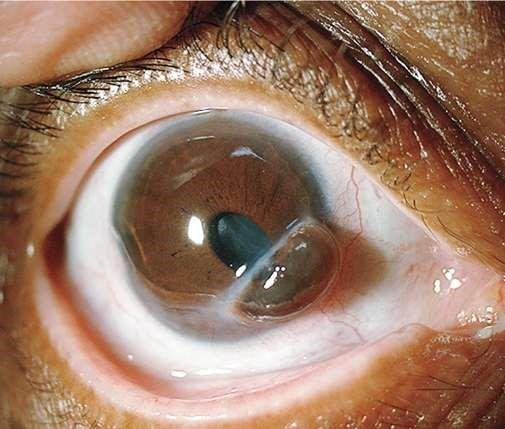
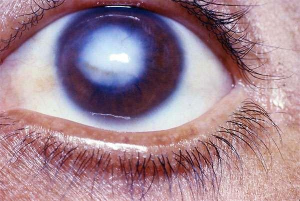
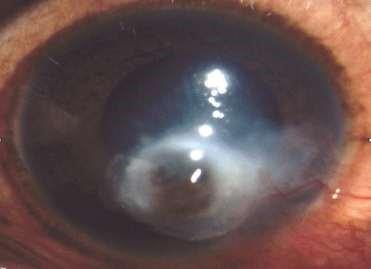

Cornea · Hypopyon ulcer
Complications
Complications:
- Secondary iridocyclitis.
- Secondary glaucoma: Secondary to hypopyon or peripheral anterior synechia.
- Descemetocele:
- Caused by deeply progressive ulcers, in which Descemet’s membrane bulges under the effect of normal IOP.
- It appears as a translucent bleb surrounded by the grayish ulcer.
- Corneal opacities:
- Result from healing of non-perforated ulcer.
- Corneal opacities interfere with vision directly and indirectly by producing irregular astigmatism.
- Perforation of a corneal ulcer:
- Occurs only in the presence of deep ulcer which had progressed much deep accompanied by sudden increase in the IOP either due to straining, coughing, crying, sneezing or due to the uncooperative eye examination.
Sequalae of corneal Perforation:
- Iris prolapse.
- Anterior synechia.
- Leucoma adherent.
- Lost AC with complicated cataract.
- Corneal fistula.
- Endophthalmitis.


